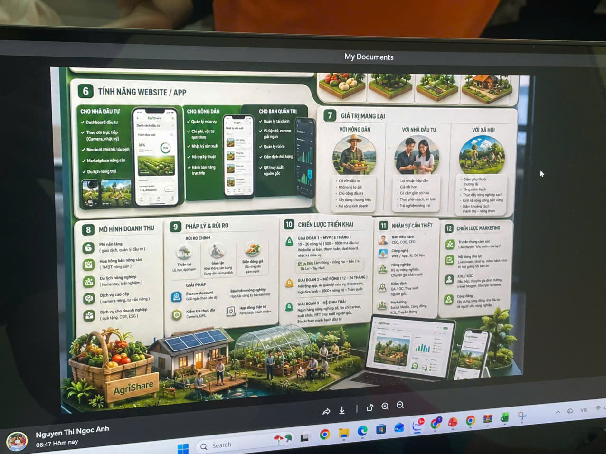
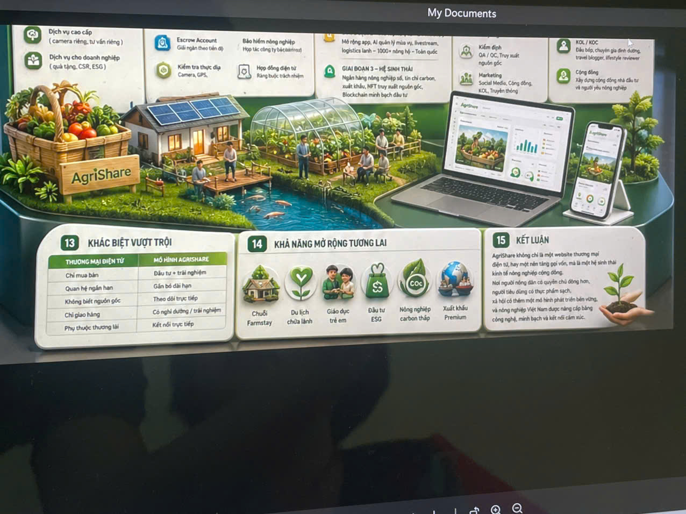

Thẩm định vườn
Xác minh vị trí, năng lực sản xuất, lịch sử mùa vụ và rủi ro địa phương.
 AGRISHARE
Đầu tư nông nghiệp - Chia sẻ giá trị - Gắn kết tương lai
Bắt đầu đầu tư
AGRISHARE
Đầu tư nông nghiệp - Chia sẻ giá trị - Gắn kết tương lai
AGRISHARE
Đầu tư nông nghiệp - Chia sẻ giá trị - Gắn kết tương lai
Bắt đầu đầu tư
AGRISHARE
Đầu tư nông nghiệp - Chia sẻ giá trị - Gắn kết tương lai
Nền tảng đầu tư nông nghiệp
Cùng nông dân phát triển vườn cây, theo dõi sản xuất theo thời gian thực và nhận giá trị từ nông sản sạch, minh bạch, có truy xuất.
Mô hình vận hành
AgriShare thiết kế như một hệ điều hành cho trang trại nhỏ: dự án được thẩm định, giải ngân theo giai đoạn, cập nhật nhật ký, camera, GPS, hợp đồng điện tử và báo cáo lợi nhuận sau thu hoạch.
Xác minh vị trí, năng lực sản xuất, lịch sử mùa vụ và rủi ro địa phương.
Công bố mức vốn, sản phẩm, thời gian thu hoạch và kịch bản lợi nhuận.
Vốn được giữ qua escrow và chi trả theo mốc tiến độ đã được xác nhận.
Nông sản được bán, giao cho nhà đầu tư hoặc chuyển thành trải nghiệm farmstay.
Marketplace đầu tư
Ước tính dòng tiền
Công cụ này giúp nhà đầu tư hiểu nhanh kịch bản lợi nhuận trước khi xem hợp đồng chi tiết. Số liệu demo có thể thay bằng API khi triển khai thật.
Dashboard vận hành

Cho nông dân và hợp tác xã
Nông dân có thể đăng ký vườn, nhận thiết kế gói vốn, cập nhật nhật ký sản xuất, liên kết chuyên gia kỹ thuật và bán nông sản trực tiếp trên cùng một nền tảng.
Quản trị rủi ro
Dòng tiền được giữ độc lập, giải ngân theo bằng chứng tiến độ và hợp đồng điện tử.
Kiểm định chất lượng, mã lô sản xuất, nhật ký vật tư và chuỗi giao hàng.
Theo dõi thời tiết, độ ẩm, sâu bệnh và biến động sản lượng theo từng khu vườn.
Gói bảo hiểm tùy chọn cho thiên tai, dịch bệnh và rủi ro logistics.
Lộ trình mở rộng
10-20 nông hộ, 1.000 nhà đầu tư, website cơ bản, thanh toán, dashboard.
App di động, logistics lạnh, marketplace nông sản và gói farmstay.
AI dự báo, carbon farming, blockchain minh bạch và xuất khẩu premium.

Sẵn sàng triển khai
Cấu trúc này đã tách rõ marketplace, dashboard, quy trình giải ngân, nội dung cho nông dân và quản trị rủi ro. Khi có backend, chỉ cần thay mảng dữ liệu demo bằng API.
Khám phá dự án